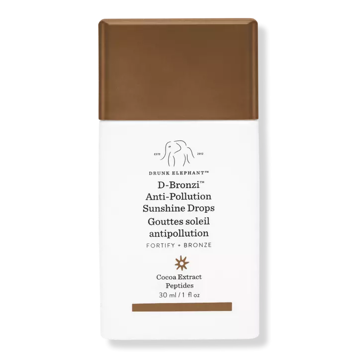
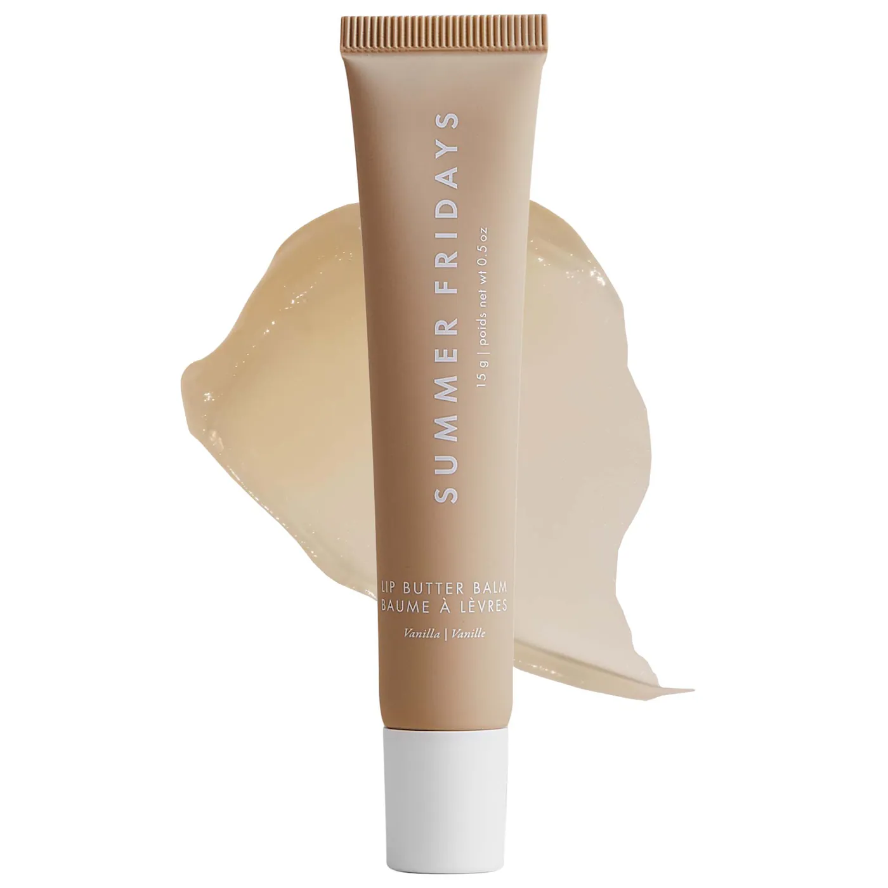
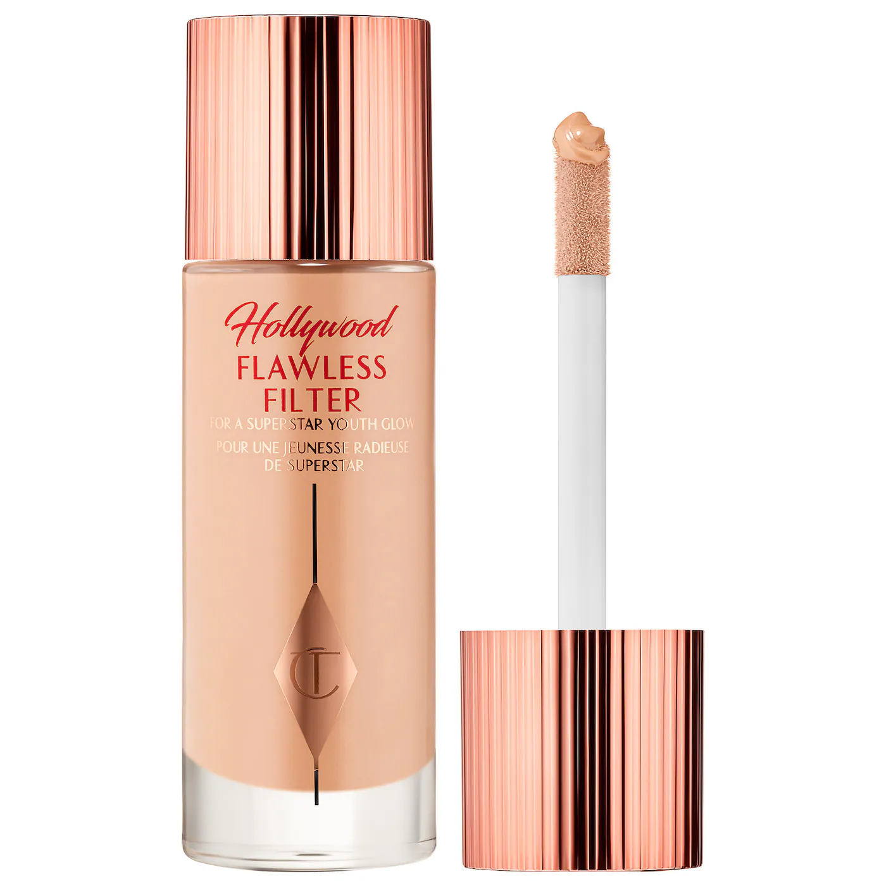
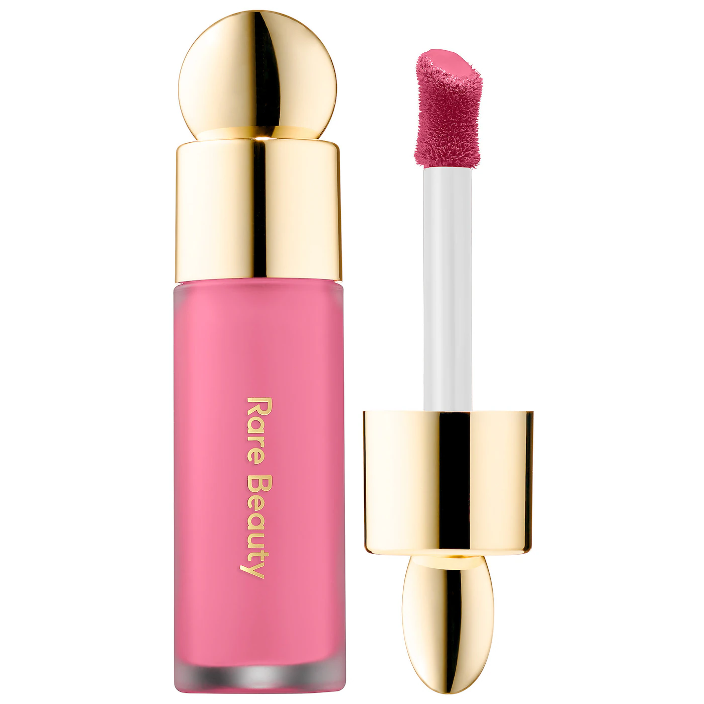

Drunk Elephant Bronzer Drops
These bronzing drops have been going viral since 2021. They were launched in 2018, however nobody knew what they were until makeup became viral on TikTok. These bronzing drops make you tan without having to lay in the sun or use a tanning bed. They are a great base for undernath your makeup or if you just want to glow on a regualr day.
Summer Fridays Lip Balm
The brand "Summer Fridays" came out with a buttery lip balm in the flavor Vanilla which became their original flavor. TikTok was able to make this product viral because influencers and their reviews were amazing. Reviews have made it clear that this is the softest lip balm you will ever use. 10/10 reccomend!
Charlotte Tilburry Flawless Filter
Flawless Filter, from the brand Charlotte Tilburry, is a light foundation that makes you glow instantly. The smallest amount of product will go a long way. A viral trend on social media is the concept of "glowing skin." Users of these apps will grab anything they see and the Flawless Filter trend is far from over.
Rare Beauty Blush: Shade Happy
Selena Gomez's line of Rare Beauty has gone viral because she is the one who owns it. Selena Gomez is well known from her line but also from her acting/singing. When a celebrity promotes or creates something, followers go for it right away. Rare beauty has multiple shades of blushes, but the most viral shade is called happy. Everyone ran to there local makeup stores to get this blush!
These products have gone viral for a while now! Run to your local stores to get them.